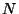

Next: Formats and standards
Up: The Speex Codec Manual
Previous: Command-line encoder/decoder
Contents
Index
Subsections
Programming with Speex (the libspeex API)
This section explains how to use the Speex API. Examples of code can
also be found in appendix B.
In order to encode speech using Speex, you first need to:
-
- #include <speex.h>
You then need to declare a Speex bit-packing struct
-
- SpeexBits bits;
and a Speex encoder state
-
- void *enc_state;
The two are initialized by:
-
- speex_bits_init(&bits);
enc_state = speex_encoder_init(&speex_nb_mode);
For wideband coding, speex_nb_mode will be replaced by speex_wb_mode.
In most cases, you will need to know the frame size used by the mode
you are using. You can get that value in the frame_size variable
with:
-
- speex_encoder_ctl(enc_state,SPEEX_GET_FRAME_SIZE,&frame_size);
Once the initialization is done, for every input frame:
-
- speex_bits_reset(&bits);
speex_encode(enc_state, input_frame, &bits);
nbBytes = speex_bits_write(&bits, byte_ptr, MAX_NB_BYTES);
where input_frame is a (float *) pointing to the
beginning of a speech frame, byte_ptr is a (char *)
where the encoded frame will be written, MAX_NB_BYTES is
the maximum number of bytes that can be written to byte_ptr
without causing an overflow and nbBytes is the number of bytes
actually written to byte_ptr (the encoded size in bytes).
Before calling speex_bits_write, it is possible to find the number
of bytes that need to be written by calling speex_bits_nbytes(&bits),
which returns a number of bytes.
After you're done with the encoding, free all resources with:
-
- speex_bits_destroy(&bits);
speex_encoder_destroy(enc_state);
That's about it for the encoder.
In order to encode speech using Speex, you first need to:
-
- #include <speex.h>
You also need to declare a Speex bit-packing struct
-
- SpeexBits bits;
and a Speex encoder state
-
- void *dec_state;
The two are initialized by:
-
- speex_bits_init(&bits);
dec_state = speex_decoder_init(&speex_nb_mode);
For wideband decoding, speex_nb_mode will be replaced by
speex_wb_mode. If you need to obtain the size of the frames
that will be used by the decoder, you can get that value in the frame_size
variable with:
-
- speex_decoder_ctl(dec_state, SPEEX_GET_FRAME_SIZE, &frame_size);
There is also a parameter that can be set for the decoder: whether
or not to use a perceptual post-filter. This can be set by:
-
- speex_decoder_ctl(dec_state, SPEEX_SET_ENH, &enh);
where enh is an int that with value 0 to have the post-filter
disabled and 1 to have it enabled.
Again, once the decoder initialization is done, for every input frame:
-
- speex_bits_read_from(&bits, input_bytes, nbBytes);
speex_decode(st, &bits, output_frame);
where input_bytes is a (char *) containing the bit-stream
data received for a frame, nbBytes is the size (in bytes) of
that bit-stream, and output_frame is a (float *)
and points to the area where the decoded speech frame will be written.
A NULL value as the first argument indicates that we don't have the
bits for the current frame. When a frame is lost, the Speex decoder
will do its best to "guess" the correct signal.
After you're done with the decoding, free all resources with:
-
- speex_bits_destroy(&bits);
speex_decoder_destroy(dec_state);
The Speex encoder and decoder support many options and requests that
can be accessed through the speex_encoder_ctl and speex_decoder_ctl
functions. These functions are similar to the ioctl system
call and their prototypes are:
-
- void speex_encoder_ctl(void *encoder, int request, void *ptr);
void speex_decoder_ctl(void *encoder, int request, void *ptr);
The different values of request allowed are (note that some only apply
to the encoder or the decoder):
- SPEEX_SET_ENH**
- Set perceptual enhancer
to on (1) or off (0) (integer)
- SPEEX_GET_ENH**
- Get perceptual enhancer status (integer)
- SPEEX_GET_FRAME_SIZE
- Get the frame size used for the current
mode (integer)
- SPEEX_SET_QUALITY*
- Set the encoder speech quality (integer 0
to 10)
- SPEEX_GET_QUALITY*
- Get the current encoder speech quality (integer
0 to 10)
- SPEEX_SET_MODE*
-
- SPEEX_GET_MODE*
-
- SPEEX_SET_LOW_MODE*
-
- SPEEX_GET_LOW_MODE*
-
- SPEEX_SET_HIGH_MODE*
-
- SPEEX_GET_HIGH_MODE*
-
- SPEEX_SET_VBR*
- Set variable bit-rate (VBR) to on (1) or off
(0) (integer)
- SPEEX_GET_VBR*
- Get variable bit-rate
(VBR) status (integer)
- SPEEX_SET_VBR_QUALITY*
- Set the encoder VBR speech quality (float
0 to 10)
- SPEEX_GET_VBR_QUALITY*
- Get the current encoder VBR speech quality
(float 0 to 10)
- SPEEX_SET_COMPLEXITY*
- Set the CPU resources allowed for the
encoder (integer 1 to 10)
- SPEEX_GET_COMPLEXITY*
- Get the CPU resources allowed for the
encoder (integer 1 to 10)
- SPEEX_SET_BITRATE*
- Set the bit-rate to use to the closest value
not exceeding the parameter (integer in bps)
- SPEEX_GET_BITRATE
- Get the current bit-rate in use (integer in
bps)
- SPEEX_SET_SAMPLING_RATE
- Set real sampling rate (integer in Hz)
- SPEEX_GET_SAMPLING_RATE
- Get real sampling rate (integer in Hz)
- SPEEX_RESET_STATE
- Reset the encoder/decoder state to its original
state (zeros all memories)
- SPEEX_SET_VAD*
- Set voice activity detection
(VAD) to on (1) or off (0) (integer)
- SPEEX_GET_VAD*
- Get voice activity detection (VAD) status (integer)
- SPEEX_SET_DTX*
- Set discontinuous transmission
(DTX) to on (1) or off (0) (integer)
- SPEEX_GET_DTX*
- Get discontinuous transmission (DTX) status (integer)
- SPEEX_SET_ABR*
- Set average bit-rate
(ABR) to a value n in bits per second (integer in bps)
- SPEEX_GET_ABR*
- Get average bit-rate (ABR) setting (integer in
bps)
- *
- applies only to the encoder
- **
- applies only to the decoder
- normally only used internally
Speex modes have a query system similar to the speex_encoder_ctl
and speex_decoder_ctl calls. Since modes are read-only, it is only
possible to get information about a particular mode. The function
used to do that is:
-
- void speex_mode_query(SpeexMode *mode, int request, void *ptr);
The admissible values for request are (unless otherwise note, the
values are returned through ptr):
- SPEEX_MODE_FRAME_SIZE
- Get the frame size (in samples) for the
mode
- SPEEX_SUBMODE_BITRATE
- Get the bit-rate for a submode number specified
through ptr (integer in bps).
Packing and in-band signalling
Sometimes it is desirable to pack more than one frame per packet (or
other basic unit of storage). The proper way to do it is to call speex_encode

times before writing the stream with speex_bits_write. In cases
where the number of frames is not determined by an out-of-band mechanism,
it is possible to include a terminator code. That terminator consists
of the code 15 (decimal) encoded with 5 bits, as shown in figure 4.
It is also possible to send in-band ``messages'' to the other
side. All these messages are encoded as ``pseudo-frames'' of mode
14 which contain a 4-bit message type code, followed by the message.
Table 1 lists the available codes,
their meaning and the size of the message that follows. Most of these
messages are requests that are sent to the encoder or decoder on the
other end, which is free to comply or ignore them. By default, all
in-band messages are ignored.
Table 1:
In-band signalling codes
| Code |
Size (bits) |
Content |
| 0 |
1 |
Asks decoder to set perceptual enhancement off (0) or on(1) |
| 1 |
1 |
Asks (if 1) the encoder to be less ``agressive'' due to high packet
loss |
| 2 |
4 |
Asks encoder to switch to mode N |
| 3 |
4 |
Asks encoder to switch to mode N for low-band |
| 4 |
4 |
Asks encoder to switch to mode N for high-band |
| 5 |
4 |
Asks encoder to switch to quality N for VBR |
| 6 |
4 |
Request acknowloedge (0=no, 1=all, 2=only for in-band data) |
| 7 |
4 |
Asks encoder to set CBR (0), VAD(1), DTX(3), VBR(5), VBR+DTX(7) |
| 8 |
8 |
Transmit (8-bit) character to the other end |
| 9 |
8 |
Intensity stereo information |
| 10 |
16 |
Announce maximum bit-rate acceptable (N in bytes/second) |
| 11 |
16 |
reserved |
| 12 |
32 |
Acknowledge receiving packet N |
| 13 |
32 |
reserved |
| 14 |
64 |
reserved |
| 15 |
64 |
reserved |
|
Finally, applications may define custom in-band messages using mode
13. The size of the message in bytes is encoded with 5 bits, so that
the decoder can skip it if it doesn't know how to interpret it.
Next: Formats and standards
Up: The Speex Codec Manual
Previous: Command-line encoder/decoder
Contents
Index
Jean-Marc Valin
2003-03-23